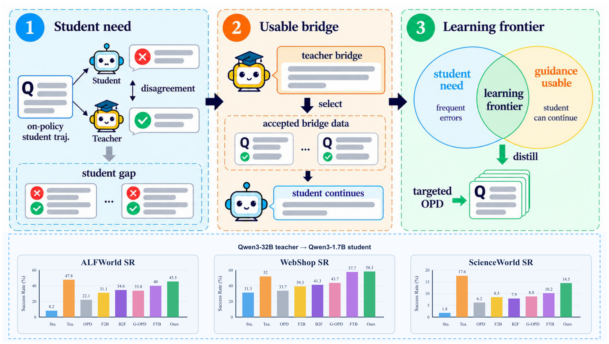
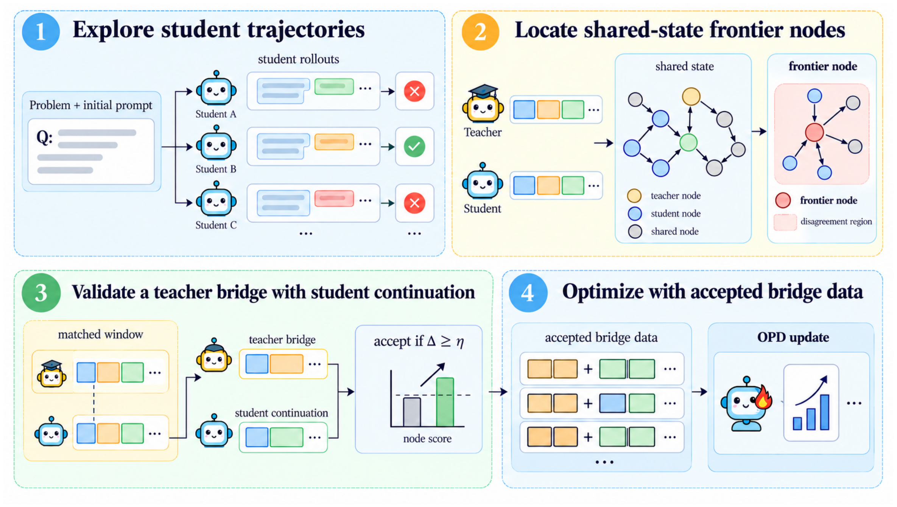
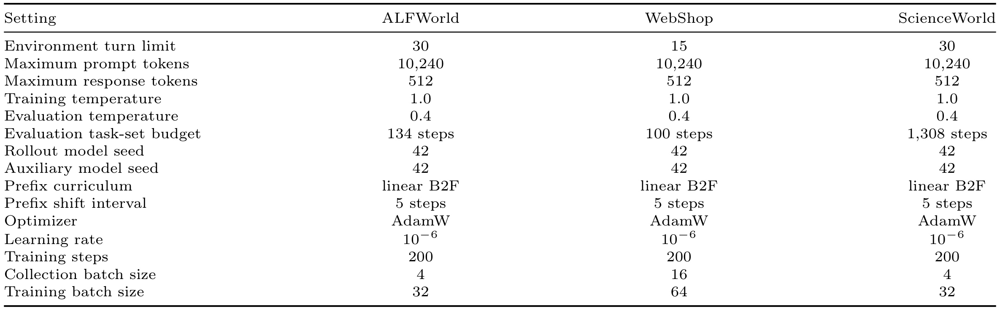
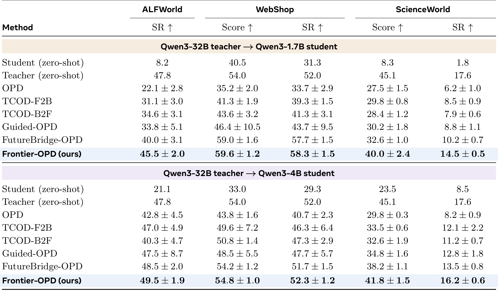
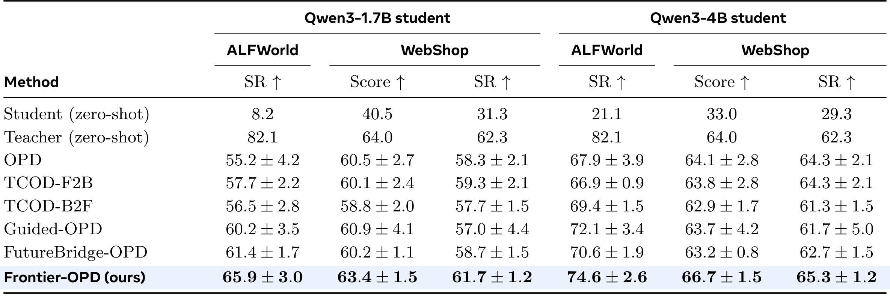
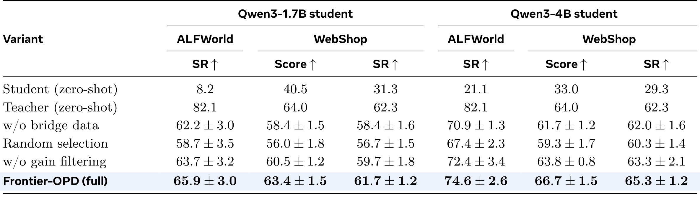
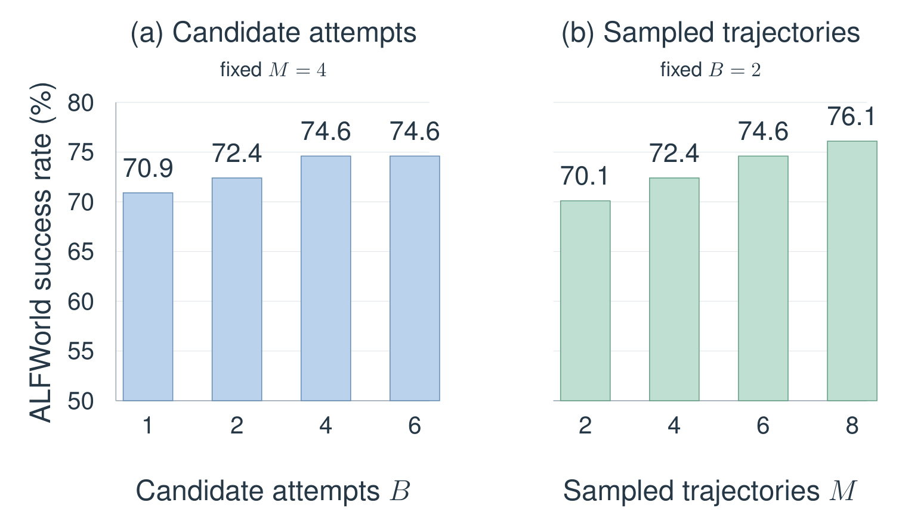
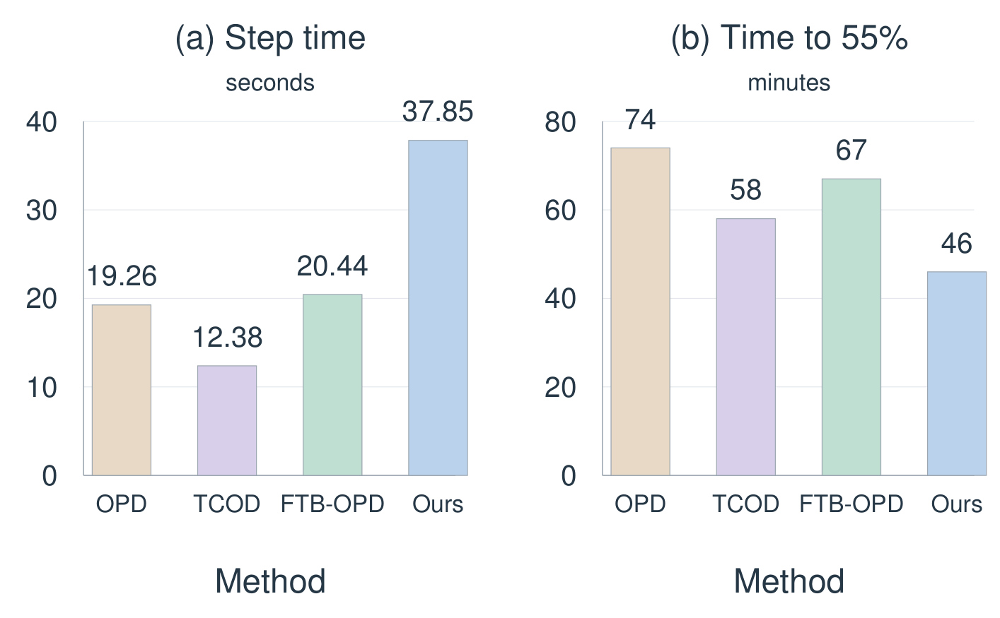

Frontier-OPD：寻找智能体能力边缘，让教师只教学生能够接得住的下一步
论文：Frontier-OPD: Discovering the Edge of Agent Capability and Teaching Agents to Go Beyond。作者：Zheng Jiang、Yiming Chen、Houde Qian、Ling Li、Chaoyang Li、Lifeng Sun。机构：清华大学。首发：2026-10-23，arXiv v1。规范入口：论文页面。代码：官方仓库入口，本次事实核验访问返回 HTTP 404，不能视为已公开可复现。笔记日期与访问日期：2026-10-27，Asia/Shanghai。本文依据完整17页论文，包括附录协议与算法；结果均为作者报告，未独立复现实验。
这篇论文把多轮智能体蒸馏中的“向教师要什么数据”拆成两个连续问题：先从学生自己的轨迹寻找反复暴露的学习需求，再检查短暂教师干预后学生是否还能维持可用行为。共享状态用于汇聚证据，完整交互历史用于真实回放，两者承担不同职责。
仅靠师生分歧不足以决定应该教什么：需要纠正某个决策，与学生能否利用该纠正继续自主行动，是两个不同问题。有效监督必须既针对尚未掌握的决策，又与学生接手后的行为能力相容。
1. 背景和问题
大模型智能体面对的监督对象不是孤立问答，而是一串会改变后续观测的动作。家庭环境中，一次拿取、打开或放置决定了下一轮可操作的物体；购物环境中，一次点击决定了下一页的选项；科学实验环境中，一个工具操作会改变之后的实验条件。这使知识蒸馏发生了结构变化：教师即使对每个单独问题都给出合理答案，也不代表学生在自己实际到达的历史中能用上这些答案。学生先前的误操作可能已经使专家示范中的后续步骤失去前提，离线模仿因此会面对明显的训练与执行分布差异。
在策略蒸馏的基本思路是让学生先生成响应，再让教师为这些学生真实生成的词元提供概率反馈。这能把训练信号放回学生当前策略经常访问的上下文，减轻完全依赖教师轨迹的问题。然而，覆盖到学生分布只是第一步。教师调用、环境交互和长轨迹重放都有成本，同样数量的监督并不一定带来同样的学习收益。如果对已经熟练的决策反复纠正，有限预算会被低收益样本消耗；如果专门挑师生差异最大的决策，教师可能一步把状态推进到学生完全不会处理的区域。困难程度与可学习程度并不是同一个量。
论文引言用短暂物体操作指导说明这种差异：学生也许只缺少某个特定操作，一旦教师示范一次就能继续完成放置；另一种指导虽然立刻看起来正确，却把任务变成学生不熟悉的新程序。两种情形都可能有较大分歧，但后者不一定是当前最合适的训练材料。因此作者把“学习前沿”定义为一种相对于当前策略的机会：学生尚未稳定掌握，却有可能在短教师桥接后继续自主行为。这里的前沿不是探索地图的边缘，也不是所有未访问状态的集合，而是学习需求与指导可用性的交集。

图中左侧将学生行为与教师反馈的分歧表示为潜在学习需求，中部强调教师桥接之后还要把控制权交回学生，右侧才把这两类条件的交集称为学习前沿。读图时不能把左侧红叉理解为经过环境奖励验证的错误标签：方法实际采用的是词元概率分歧代理。中部的“学生继续”也不是保证最终任务成功，而是后面会用有限长度窗口执行的行为检查。图下方结果条是作者把动机和主要成绩放在同一个原始图中的组合设计，本笔记保留整个原始对象，详细数值在实验章讨论，不能用结果条倒过来证明代理指标的因果含义。图里的三个环境分别代表家庭操作、商品网页交互与科学程序任务，意在说明同一种监督分配逻辑可以跨任务接口使用，而不是三个任务共享相同状态空间。
已有路线分别处理了这个链条的部分环节。时间课程通过控制学生从多深的专家前缀开始执行来调整难度；逐轮指导方法安排教师何时参与；延续验证方法通过学生接手后的表现判断局部指导是否值得加入训练。本文沿着后者继续向前推进：与其在每条轨迹内部独立挑某个高分歧时刻，不如把多次尝试中到达的相似决策情境合起来看。这样既可以发现跨尝试反复出现的需求，也可以避免一次循环轨迹因为访问次数很多而占掉大部分教师预算。
共享状态的动机尤其容易被误解。一个学生在同一房间不断重复无效动作，可以形成很多高分歧样本，但这些样本可能属于同一个观察情境。如果按单次出现直接排序，就会连续干预同一种困难；如果简单把所有访问平均，一个循环很多次的轨迹仍可能主导分数。作者选择先在每条轨迹内部平均，再对到达该节点的轨迹平均，并且将候选预算施加到不同节点上。这改变的是证据组织与预算分配，不是给智能体增加一个图神经网络，也不是通过图最短路径规划生成动作。
同时，状态共享不能替代历史。可见观测和可用动作相同，并不保证隐藏环境状态完全一致；即使环境状态接近，模型在不同历史中的行为也可能不同。论文保留每个出现位置的完整上下文、学生响应与可重放前缀，选择候选节点之后再指定一个具体历史执行教师干预。节点只负责归组，历史才是模型真正的条件输入。这个区分决定了方法能否在实现上忠于论文，也决定了它能否搬到网页操作或其他部分可观测环境。
从大模型后训练角度看，本工作关心的是数据取得机制：怎样在固定教师预算下让新增监督与学生当前状态更匹配。它没有提出新的基础模型结构，没有让教师在测试时持续替学生做决定，也没有把任务成功奖励直接当成桥接筛选分数。与推荐系统的交叉启发只在方法层面：对重复情境进行去重和权重控制，对候选指导检查后续可用性，可能值得用于交互式训练数据收集；论文并未做推荐点击率或在线用户实验，不能据此声称能提升推荐业务指标。对工程读者，最值得追问的是回放的可靠性、教师概率是否可获取，以及额外采集能否抵消训练轮数的下降。
训练材料还有一个容易忽略的时间尺度问题。当前学生看似能接住指导，参数更新后是否仍能自主处理同类情境，需要新的采样才能知道；过去的一次接受记录并不能永久代表能力。反过来，曾经不适合的指导也可能在学生学会前置技能后变得可用。因此前沿必须随每轮策略刷新，并且训练数据筛选、后续独立评测与局部能力追踪应当分开。这个时间依赖性使本文更接近动态课程设计，而不是一次性清洗专家演示。
2. 方法
2.1 在学生经验中表示学习需求：共享状态与带符号分歧
第一个阶段从同一任务采样多条当前学生轨迹，默认每个任务四条。若启用了专家前缀课程，起点就是该课程指定的历史，否则从任务初始状态执行。每轮采集期间学生参数保持同一版本，避免把更新前后的概率混入同一次候选比较。对第若干条轨迹的某个响应位置，作者用规范化观测和可用动作信息生成状态键，再把观察到的转移记录为边。原文式一至三可写为：
符号解释：其中，观测为环境返回内容，可用动作包含合法命令或可点击元素，状态映射是确定性规范化后的哈希；历史包含当前决策所需的交互上下文，响应包含推理与动作所对应的输出词元，学生策略和教师策略对同一词元进行评分。分歧是学生对已采样响应的对数概率减去教师对数概率。较大的正值意味着学生更偏好教师不那么认可的当前响应。它是有方向的采样统计量，不能写成绝对差，也不能把负值删除；一次响应内的词元先平均，避免长响应天然获得更大绝对分数。

流程图把四件事放在一个训练循环里：采样学生轨迹、定位共享状态候选、回放并验证教师桥接、把接受的教师响应加入蒸馏。共享节点连接不同轨迹中观测相近的位置，但原来的轨迹顺序与上下文仍保存在各自记录里。图中箭头表示观察到的连接关系，并不意味着排序时进行了路径推理；原文明确说图邻接不进入节点评分。第三块的比较需要一条原学生分支和一条教师桥接后学生续行分支，不能拿不同任务、不同起点或不同长度的轨迹直接比较。第四块画出的新增数据应理解为被接受的教师桥接响应，学生新续行仅用来提供筛选证据，不能把所有新产生的词元一并加入训练。随后更新的学生重新采样，前沿随策略变化而重估，而不是给状态永久打上“已掌握”标记。因此这是数据分配闭环，并非静态难例挖掘表。
沿图追踪一条被接受的桥接，可以看到三个不同粒度的对象：排序对象是共享节点，干预对象是某条轨迹的某个具体出现，训练对象是该出现经教师继续后产生的响应词元。三者不能互相替换。比如多个访问被归到同一节点，只会在候选阶段共同影响节点得分，实际教师仍从所选代表的原始前缀开始；如果另一个历史的隐含目标不同，不能把该桥接直接拼到那个历史。验证通过之后保存的是此次教师产生的数据，也不会给同节点下所有旧访问统一标成正确。重新采样的步骤则会让新的访问和新分数替换上一轮候选估计，避免一次偶然通过的桥接长期占用监督预算。
2.2 选择不同前沿节点：轨迹平衡、候选资格与具体回放
排序只使用合格出现位置。合格意味着此前动作有效、前缀可回放、状态键存在、师生词元分数非空且对齐、分歧有限，并且原轨迹从该位置至少还留有桥接上限加验证长度的响应。设某节点在某轨迹中的合格出现集合为下式，参与该节点估计的轨迹集合也由此确定。原文式四和五对应：
集合大小分别是贡献轨迹数和该轨迹内部的访问数。每条贡献轨迹总权重相等，轨迹内再平分。附录给出的例子是同一轨迹三次分数十、另一轨迹一次分数零，节点得分为五，而不是把四次出现直接平均得到7.5。这样重复访问可以改善某条轨迹对节点的估计，但不能单靠访问次数提高该轨迹的权重。没有出现的轨迹不贡献零分，只有一次合格出现的节点仍可保留，所以平衡并不等于可靠性下限。
这组式子覆盖原文式六和七：先对聚合分数施加可选阈值，再最多选预算数量的不同节点，每个节点用分歧最大的合格出现作为具体回放代表。候选预算约束的是节点，不是轨迹，所以同一轨迹可以贡献多个节点，但同一节点不会重复占候选槽位。并列按照采集顺序处理。回放时必须重置环境，再重演该出现之前的专家前缀与学生动作，教师在保存的真实历史上继续执行，不能直接把共享节点哈希当作模型输入。
教师最多执行设定的桥接轮数，第一次离开已观察节点集合时也可以提前停止，环境终止同样结束桥接。但验证必须有非终止的学生接手位置。默认桥接上限是一轮，所以图内交接与图外交接都可进入验证，进入未见节点不是接受桥接的必要条件。实际桥接长度可能比上限短，后面的匹配窗口必须采用实际长度，不能机械地总用上限。实现里若把“图外”硬编码成接纳门槛，就会变成论文没有验证的另一种算法。
2.3 延续验证：等长联合窗口与负绝对差
定位阶段的问题是哪里值得尝试，筛选阶段的问题是这次教师指导能否被当前学生利用，所以作者换了度量。原文式八至十如下：
负绝对差越接近零，师生在被评估响应上的概率越接近；这里取消正负抵消，与候选定位的带符号统计有意不同。新窗口包括实际教师桥接及之后固定轮数学生续行；旧窗口是原轨迹从同一出现位置起的等长响应片段。两条分支在分叉之后拥有各自的新历史，教师和学生必须在每个响应自己的上下文中为同一组词元评分，包含教师生成的桥接响应。先在响应内对词元平均，再在窗口内对响应轮次平均，从而不让冗长响应决定窗口权重。
有效性指示要求前缀回放成功、教师交接非终止、学生完整完成规定验证轮数且动作有效，并拥有长度匹配且分数有定义的原窗口。默认门槛为零，因此不下降的联合一致性即可通过。一个重要边界是：联合窗口改善不推出学生续行部分单独改善。教师桥接本身的高一致性可能拉高平均，有限轮数内合法续行也不等于最终完成任务，更不等于更新之后已经掌握该节点。论文将其称为行为代理，不能写成能力获得的充分条件。
2.4 蒸馏与前沿更新：保留普通经验，仅加入教师桥接
原学生经验不因候选被拒绝而删除，接受桥接后新增的只有教师响应。原文式11和12为：
其中，每条经验保存上下文、响应词元和师生概率；普通响应由采样学生产生，桥接响应由教师产生，但学生仍要在这些教师词元上评分。优势是教师减学生的词元对数概率，更新系数默认一。数据合并符号表示保留重复出现的多重集合拼接，共享状态去重仅用于候选分配，不会把训练经验按哈希折叠。新增验证续行不进入数据池，桥接也没有独立奖励加权损失，存储奖励不参与这里的多轮蒸馏目标。
作者使用学习率 $10^{-6}$的优化器、默认一阶与二阶动量、1%权重衰减和一的梯度裁剪。每次更新之后重新采样、建图、计算候选和指定代表，避免把过去的学习需求永久冻结。若每任务采集出现数为总量、合格节点数为另一总量，聚合和存储为线性规模，排序增加节点数乘其对数的开销；更昂贵的是至多候选预算乘桥接加续行轮数的新增生成和概率评估，以及前缀回放。默认四候选四轮联合窗口，至多16轮额外生成，却至多四轮教师响应进入训练，采集成本和监督量必须分开核算。
3. 实验结果
3.1 任务、模型与评测口径
实验覆盖家庭交互、商品网页交互和科学程序任务。核心结果报告成功率，网页和科学环境还报告部分完成程度的任务得分，所有指标都以零到100表示，越高越好。训练后的策略在留出任务上从环境初始状态自主执行，测试时没有教师干预，也不回放专家前缀。主比较使用320亿参数的教师，即 Qwen3-32B，学生为 Qwen3-1.7B 与 Qwen3-4B；补充比较改用 Qwen3-8B-RL 教师。每个受控比较内部固定学生初始化、训练任务、课程、提示、解码和优化设置，避免把不同配置成绩混成同一张排名。

表中三种环境的最大交互轮数分别为30、15和30，最大输入长度为10240词元，单次响应上限为512词元。训练温度为一，评测温度为0.4，因此训练采样分布和测试执行随机性不同，不能用训练窗口的一致性分数直接代替测试成功率。课程都是线性反向到正向的专家前缀安排，每五个训练步移动一次前缀，训练到第200步。采集批量在三个环境分别是四、16、四，训练批量为32、64、32；这些是任务批量，不能与每任务四条轨迹的采样次数混淆。表中的任务集预算沿用作者的步数标签，本笔记不自行改写成另一种实例计数。附录说明没有独立验证集，测试前固定检查点选择，最终报告第200步；训练策略表报告三个种子的均值和样本标准差，而敏感性柱状图只给报告成功率。思考模式全程关闭，这限制了将结果直接外推到启用长推理的智能体。
附录还要求区分任务执行错误与合法但未成功的回合，并在受控比较中沿用相同任务标识、动作解析器和历史构造规则，减少接口处理差异对方法排名的影响。
3.2 主结果：应优先比较最近机制的强基线

对于1.7B学生模型，本文在家庭环境的成功率为45.5，普通在策略蒸馏为22.1，相差23.4个百分点；但与机制最接近的延续桥接基线比较，是40提高到45.5，只相差5.5个百分点。网页成功率从该强基线的57.7提高到58.3，仅差0.6个百分点；科学环境从10.2提高到14.5，差4.3个百分点。三个环境的改进幅度显然不均匀，不能把家庭环境相对普通蒸馏的大差额作为全部任务的代表。特别是网页任务，本文与强基线的标准差都是1.5，三个种子的均值差不能支持“显著领先”的说法。任务得分也应独立阅读：网页得分59.6对59.0，科学得分40.0对32.6，后者对部分程序完成的改善更明显。
对于Qwen3-4B学生，本文相对延续桥接基线的家庭成功率差为1.0个百分点，网页成功率差0.6个百分点，科学成功率差2.7个百分点。科学任务得分由38.2到41.8，也有所提高。均值在表中所有训练策略指标上最高，这是作者结果支持的总体描述；但较大模型在某些环境中本来已经接近强基线，额外选择机制的收益更小。论文并未报告逐任务配对检验，也未给出能够隔离每个状态难度的控制分析，所以不能仅凭表格推断性能差异来自哪一种具体技能。这里同时需要区分百分点与相对百分比，避免把45.5写成相对提升45.5。
1.7B学生模型在网页环境的成功率还超过了零样本教师的52，4B学生模型的部分结果同样超过零样本教师。这个现象说明环境定向训练后的学生可能超越未在该任务适应的教师，不意味着在相同适应预算下小模型全面超过教师。教师在训练数据取得时给概率反馈，测试学生则接受了专门训练，两者并非对等训练条件。综合主表，最可信的判断是：当前配置下有一致的均值收益，且较难的科学程序与1.7B学生模型家庭操作较有空间；强基线已经表现好的网页场景，边际收益需要更多种子和成本核算才有充分把握。
3.3 教师配置变化：可迁移性而非纯强化学习效应

更换教师后，1.7B学生模型的家庭成功率为65.9，对延续桥接基线61.4差4.5个百分点；网页成功率61.7，对58.7差3.0个百分点。4B学生模型的家庭成功率为74.6，对70.6差4.0个百分点；网页成功率65.3，对62.7差2.6个百分点。网页任务得分方面，Qwen3-4B学生为66.7，高于该强基线63.2。与主表相比，排名上的均值优势保留下来，说明监督筛选程序在已测的两种教师配置下都能工作，而不是只在单个教师检查点上有效。
但该实验同时改变了教师参数规模和训练历史，不能把主表到此表的全部增益归因于强化学习。教师本身在家庭环境的零样本成功率82.1，也远高于主表教师47.8，学生获得的监督质量基础已经改变。各配置内部共享教师检查点，能够支持方法之间比较；跨配置则更适合讨论迁移稳健性，不能当成严格隔离的教师训练方式消融。此处没有科学环境列，因此也不能将结论补写成三个环境都完成了教师替换验证。作者保留检查点和强化学习来源等记录，代码入口当前不可访问仍使独立核查受限。
3.4 组件消融：候选分配与过滤互补，但尚有混杂

完整方法在两个学生规模、两个环境上的所有报告指标均值最高。Qwen3-4B学生家庭成功率74.6，去掉桥接数据降到70.9，随机选择降到67.4，去掉增益过滤降到72.4；相对于完整方法分别差3.7、7.2和2.2个百分点。网页成功率完整为65.3，三个消融分别是62.0、60.3、63.3。1.7B学生模型也呈现类似方向，随机选择家庭成功率58.7，完整为65.9。相较盲目添加可用桥接，选择在哪里尝试指导是影响结果的重要环节，过滤则在合法桥接之上继续提供增量收益。
解释消融时必须守住两个边界。随机版本不是从不同节点中随机抽取，而是从所有合格出现位置中无放回均匀采样，因此同时改变分数排序与候选分配单位；它可能重新让循环多次的同一情境占多个槽位。这不能单独证明共享状态聚合、更不能证明图邻接结构的因果价值。去掉增益过滤的版本保留回放、动作合法与续行完整等共同有效性要求，只取消联合窗口的增益门槛，因此不是任意教师输出都无条件进入训练。去掉桥接数据的版本仍保留普通学生经验，测试的是新增监督贡献。整组结果支持完整取得程序中的选择、桥接与过滤相互补充，但尚未隔离带符号打分、轨迹平衡、节点去重和联合窗口中教师部分各自的独立效应。
这些消融共享普通轨迹数量、学生初始化、专家前缀课程和更新预算，完整配置的轨迹数与候选数均为4，桥接上限1轮、验证3轮、接受门槛0。因此比较控制了基本训练流程，却没有控制最终接受的桥接数量和新增教师词元总量。随机版本表现更差，既可能来自指导位置质量下降，也可能来自有限槽位被重复情境消耗；现有表格不足以区分两种来源。
3.5 预算敏感性：更多干预与更多经验不是同一种扩展

左图固定每任务四条学生轨迹，把候选尝试数从一提高到二、四、六，家庭成功率依次为70.9、72.4、74.6和74.6。已测范围内，四次以后没有继续看到收益，因此额外教师尝试具有边际递减；这不是证明所有值得学习的状态已经耗尽，可能也与过滤通过率、回放成本和学生优化预算有关。横轴是尝试数量而非接受数量，被拒绝的桥接仍然花费生成与评分资源。右图固定候选预算为二，把轨迹数从二提高到四、六、八，成功率依次为70.1、72.4、74.6、76.1。更多学生经验在该范围继续有收益，但既扩大候选池，也直接扩大普通蒸馏数据，不能全归因于前沿估计更准确。两幅图中的74.6分别对应四轨迹四候选与六轨迹二候选，不能因数值相同就写成同一个配置。作者没有给出这些柱状条的完整种子误差，适宜把曲线视为预算趋势证据，而不是从中推出普适最优参数。
两组扫描都使用同一RL教师与4B学生，在家庭环境进行，桥接上限、续行长度和接受门槛保持不变，训练任务、初始化与优化设置也在各自扫描内部固定。这些条件支持把横轴变化与报告趋势联系起来，但扫描不是等计算量实验：增加轨迹意味着更多学生生成和教师重评分，增加候选意味着更多独立前缀回放以及桥接验证。前者增加原始监督，后者增加指导尝试，两类预算不能只用一个总样本数替代。更值得注意的是，曲线没有提供接受率或每个候选新增教师响应量，无法判断左图平台期究竟来自有用候选不足，还是有效桥接已经足够而优化成为限制。若据此设计预算调度，需要结合实际墙钟成本观察固定训练时间下的结果，而不能把右图持续上升直接解释为应该无限增加轨迹。
3.6 墙钟时间：单步最慢，特定成功门槛最早达到

左图显示本文每步平均37.85秒，高于普通蒸馏19.26秒、时间课程12.38秒和延续桥接20.44秒。新机制没有使一次训练步变便宜；相对普通蒸馏，每步约多出97%的墙钟时间。右图另测到达55%成功率的累计耗时：本文46分钟，普通蒸馏74分钟，时间课程58分钟，延续桥接67分钟。因此可以说在这个教师、学生、家庭任务、四张显卡和目标门槛组合中，新增采集成本被更快达到目标的学习进度抵消。相对普通蒸馏少28分钟，相对最近强基线少21分钟，但这不是所有训练步均有同样加速，也不代表最终200步总训练成本一定更低。
此结果尤其依赖目标门槛选择。较低门槛可能有不同启动成本，较高门槛可能需要不同数量更新，其他环境的回放和教师评分耗时也会改变收益。论文没有展示多硬件、多门槛的完整成本曲线，也没有把收益归因拆到图构建、前缀回放和概率重算的各子阶段。工程复现应同时记录每步耗时、每次候选拒绝成本、接受教师响应量、固定时间预算下性能和目标达成时间，才能判断采用这种监督分配机制是否划算。这里的时间数据支持一个明确设置下的端到目标优势，不能扩张为智能体训练普遍提速结论。
从目标耗时计算，本文相对普通蒸馏减少约37.8%，相对延续桥接减少约31.3%；这两个比例的分母都是各自基线达到相同目标的耗时，不能拿来表示单步吞吐提升。两张子图共同说明监督取得存在成本与学习进度的交换：更多采集工作可能减少达到目标所需的更新过程，但是否值得仍由任务难度和目标决定。原文只给出这一组目标计时，未证明其他性能阈值下也维持相同比例。
4. 总结
Frontier-OPD 最有价值的贡献是把“哪个错误值得教师管”与“这次纠正学生能否接着用”连成同一个数据取得循环。它没有把分歧直接等同于学习价值，也没有把教师的局部正确直接等同于学生的后续能力。共享状态提供去重与汇聚的参照，轨迹平衡降低循环访问的预算偏置，具体历史回放保留模型所需上下文，联合窗口筛选检查短指导与有限学生续行的行为相容性。接受的教师响应与普通学生经验一起进行相同蒸馏更新，下一轮再用新策略重估前沿，整体设计的增量主要发生在监督分布。
从实验证据看，三域、两种学生规模和两种教师配置构成了比单任务展示更扎实的支持。主表与补充教师表中，完整方法的训练策略均值都最高；1.7B学生模型的家庭和科学任务相对于近邻强基线的差额，确实比网页任务更值得关注。组件消融和预算扫描也与“选择与过滤互补”的解释一致。但这些结果仍是三个种子的摘要，而且没有完整隔离轨迹平衡、节点去重、带符号分歧和窗口构成。最稳妥的技术判断是完整程序值得复现，而不是每个组成件已经被因果验证。
学习前沿在本文中是一组行为代理，不是已经证明会扩大的能力边界。高分歧不必然意味着缺技能，联合一致性不下降不保证学生续行单独改善，桥接被接受也不保证更新后已经掌握。若希望把论文标题中的“越过边缘”转化成更强结论，需要跟踪被选择节点在训练前后是否可以由学生独立解决，统计同类需求是否在后续采样中消退，并用新的任务历史验证而不是重用筛选窗口。作者当前评测的是最终自主任务成绩，尚未直接追踪这些局部技能的获得过程。
状态抽象是另一个实际风险。规范化观测和动作集合可能把隐藏状态或不同目标语境合并，只有一次出现的节点也可参与排名，极端历史依赖决策的聚合分数可能并不稳定。历史仍保留并不能完全消除选错节点的问题，只是确保教师在回放时获得真实上下文。进一步研究可以在不改变模型输入的前提下，对状态分组的纯度、贡献轨迹数量和代表历史选择做对照；这些是笔记基于机制提出的后续检查方向，不是原文已经取得的结果。
部署适用性则取决于环境能否重置与准确回放，以及能否获得教师词元概率。只有封闭接口、不可回放真实网页或高成本外部动作的场景，都可能难以原样采用本方案。即便可用，也应区分失败回放、终止桥接、续行不完整和增益不足四类损耗，避免把所有未接受候选混为模型能力问题。默认单轮桥接不要求离开经验图，这一点让方法更接近当前策略附近的指导筛选，也意味着不能把它包装成探索未知世界的保证。
我会优先关注三个复现问题：相同新增教师响应数量下是否仍超过延续桥接基线；保持不同节点预算不变仅替换排名，是否还能看到随机消融中的大差额；把联合窗口分解为桥接与学生续行两部分后，接受率与最终任务成功是否仍一致。成本方面，应在多个成功门槛和固定训练时间下同时比较。目前四张显卡上的单次门槛优势鼓励继续测量，却不足以决定所有配置的投入产出。代码入口本次访问返回不存在，故本笔记的完整性来自原文机制和图表核对，不能替代可运行代码与日志复核。